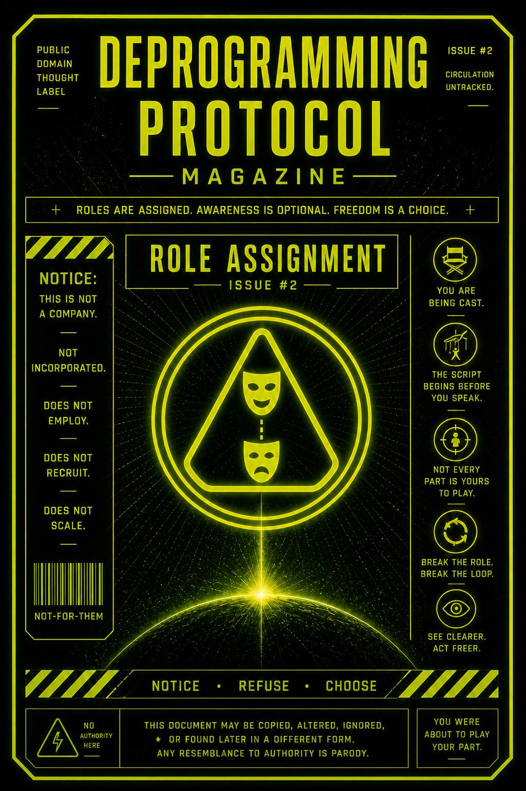

You are not just reacting.
You are being placed.
Every signal doesn’t just ask what you think.
It assigns you a part:
Not randomly.
Predictably.
Most people don’t notice the assignment.
They just start performing.
This issue exists to expose how roles are assigned in real time… and how quickly identity forms around them.
It teaches you to notice when:
…and to step out of the role before it hardens.
A signal appears.
Not neutral.
Framed.
It carries:
Before you think, you feel.
That feeling points you somewhere:
“Agree with this.”
“Fight this.”
“Be this kind of person.”
Now the system waits.
Not for truth.
For participation.
Once you react, the role locks in:
You’re now the one who…
The more you repeat it,
the less it feels like a role.
It feels like you.
Catch the assignment early.
Right when something hits and you feel pulled—
pause.
Yeah. You again.
Still not commenting.
Good. Stay there a second longer.
Ask:
Feel the difference.
That’s the gap.
Inside it:
Now choose:
Just don’t auto-accept.
This publication does not assign roles.
It only reveals them.
No membership.
No identity offered.
No position required.
If you feel categorized,
that wasn’t us.